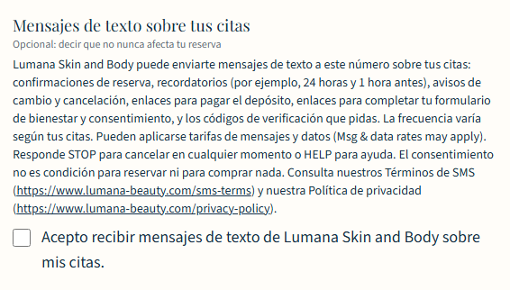
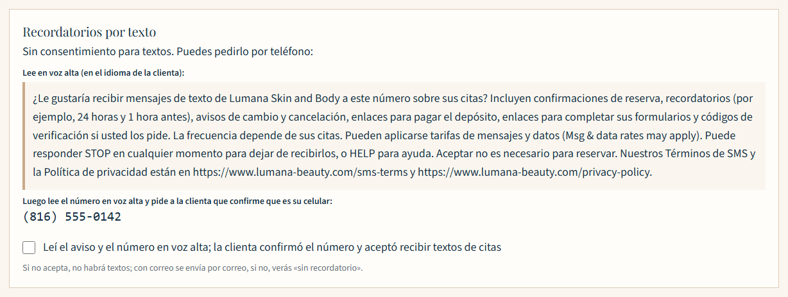
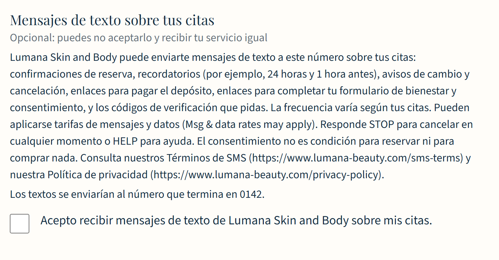
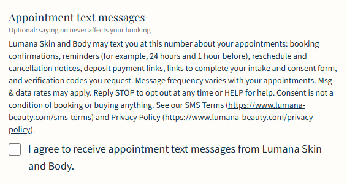
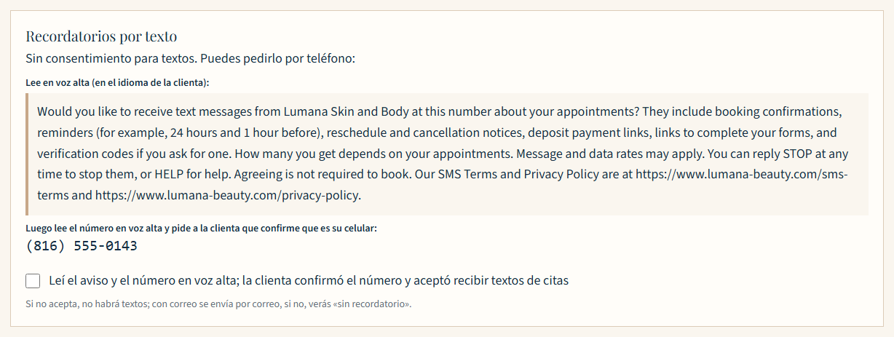
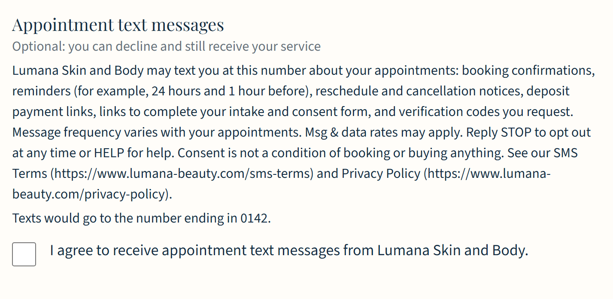

Cómo aceptas los mensajes · How you opt in
Mensajes de texto sobre tus citas
Lumana Skin and Body envía mensajes de texto sobre citas solo a los clientes que aceptan recibirlos. Aceptar es opcional, la casilla empieza sin marcar y no es condición para reservar ni para comprar nada. Estas son las pantallas donde se acepta, con datos de ejemplo. Consulta los Términos de SMS y la Política de privacidad.
1. Reserva en línea (sitio web)

2. Por teléfono (el personal lee el aviso)

3. En la tableta del estudio

Appointment text messages
Lumana Skin and Body sends appointment text messages only to clients who agree to receive them. Agreeing is optional, the checkbox starts unchecked, and it is not a condition of booking or buying anything. These are the screens where a client agrees, shown with sample data. See the SMS Terms and the Privacy Policy.
1. Online booking (website)

2. By phone (staff read the disclosure)

3. On the studio tablet
